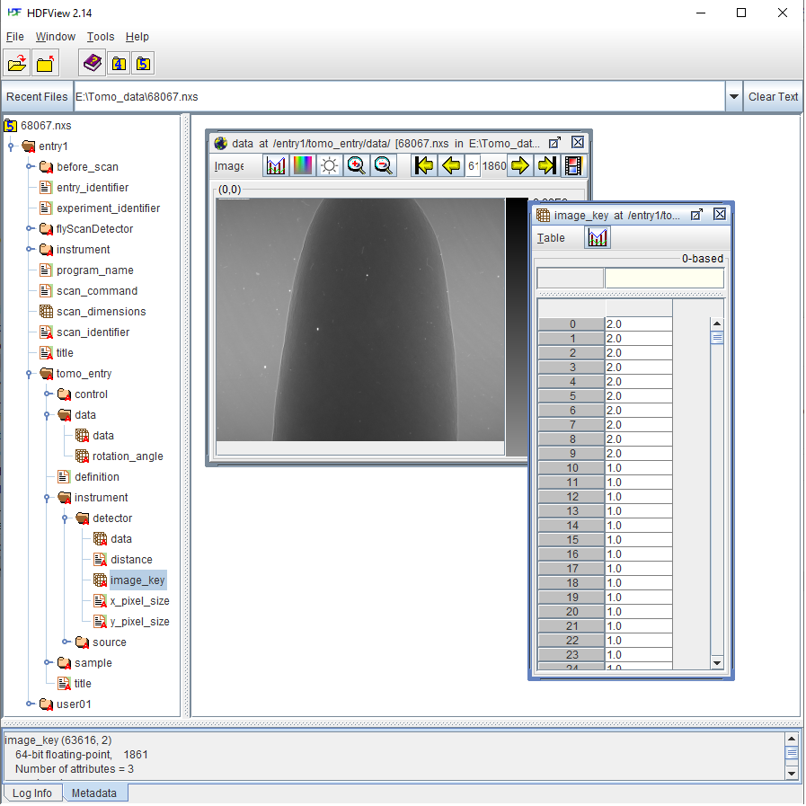
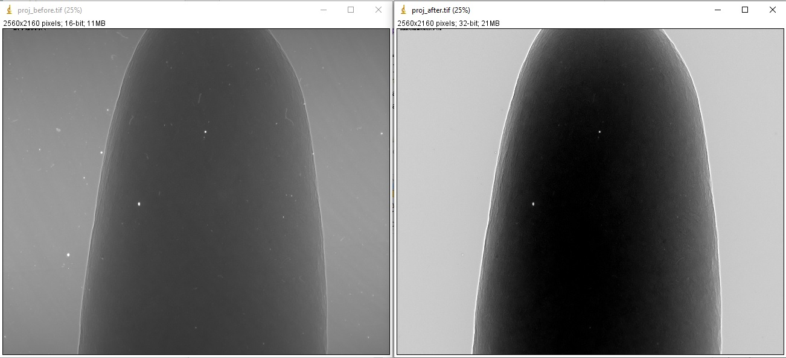
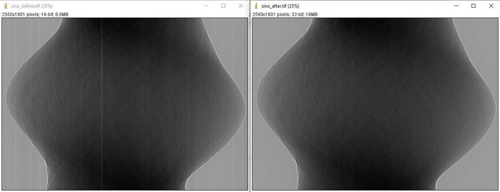
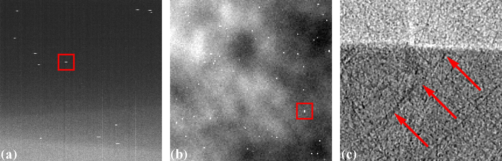
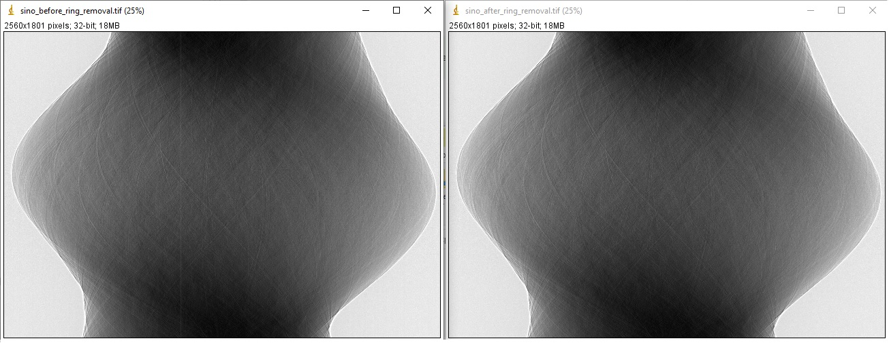
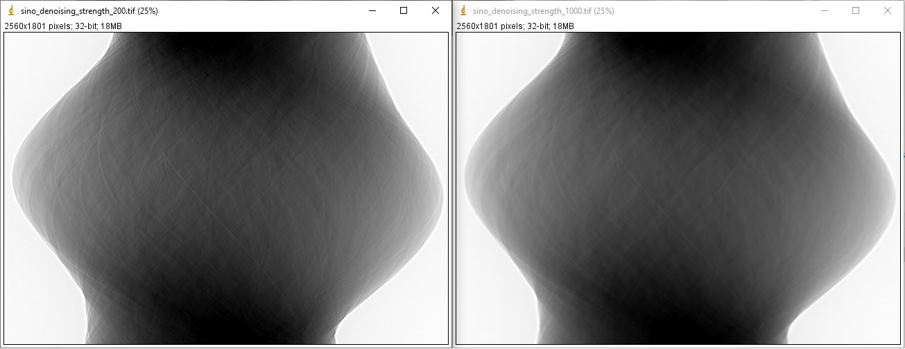
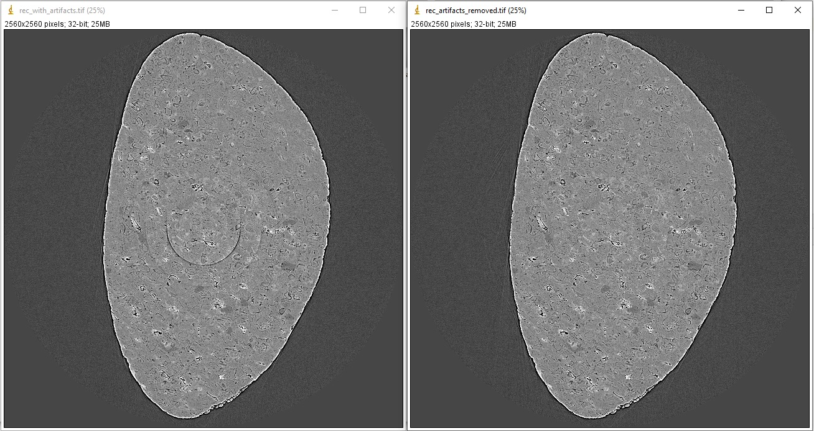
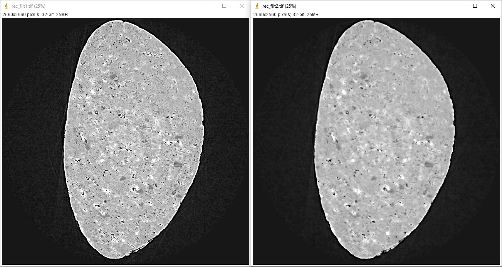
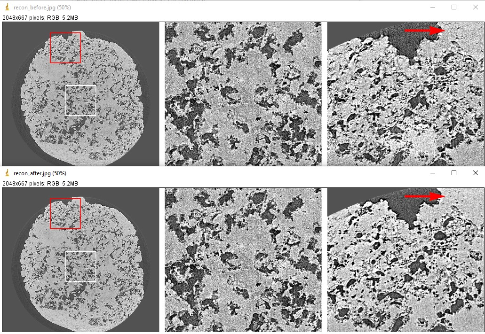
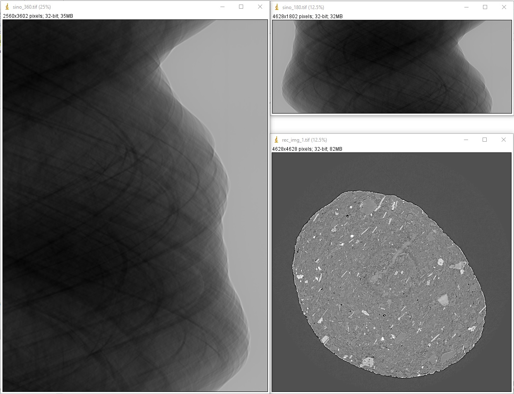

1.4. Basic workflow for processing tomographic data¶
1.4.1. Read/write data¶
The very first step is to know how to load data to workspace. Different communities use different file formats: hdf/nxs, mrc, txrm, xrm, tif, dicom, raw,… and they need specific Python libraries to work with. The common format used by synchrotron/neutron community is hdf/nxs. To load a dataset from a hdf/nxs file we need to know the key or path to the data. This can be done using Hdfviewer or Algotom’s function as shown in section 1.2. For a tomographic hdf file, some basic metadata we need to know:
Keys/paths to projections images, flat-field images, and dark-field images.
Key to rotation angles corresponding to projection images. This information may be not needed if the data was acquired in the ange range of [0; 180-degree].
If the data is from a helical scan, extra information such as pixel size, pitch, and translation positions is needed.
Information which is used by specific data processing methods such as pixel size, sample-detector distance, or X-ray energy.
Fig. 1.4.1 shows the content of a hdf file where users can find key/path to datasets used for tomographic reconstruction.
To load these data using Algotom’s functions:
import algotom.io.loadersaver as losa file = "C:/data/tomo_00064.h5" proj_img = losa.load_hdf(file, key_path="exchange/data") # This is an hdf object, no data being loaded yet. flat_img = losa.load_hdf(file, key_path="exchange/data_white") dark_img = losa.load_hdf(file, key_path="exchange/data_dark") angles = losa.load_hdf(file, key_path="exchange/theta")
Another tomographic hdf/nxs file acquired at beamline I12, Diamond Light Source (DLS) where the file structure, keys, and paths are different to the one before. In this data, dark-field images and flat-field images are at the same dataset as projection images where there is a dataset named “image_key” used to distinguish these images.
Fig. 1.4.2 Datasets of a tomographic hdf file acquired at DLS. Image-key value of 2 is for dark-field, 1 is for flat-field, and 0 is for projection image.¶
We can load the data, extract a projection image, and save it to tif.
import algotom.io.loadersaver as losa file = "E:/Tomo_data/68067.nxs" data_img = losa.load_hdf(file, key_path="entry1/tomo_entry/data/data") # This is an hdf object. # Extract a subset of data and save to tif print(data_img.shape) # 1861 x 2160 x2560 losa.save_image("E:/output/image_00061.tif", data_img[61])
There are many Algotom’s functions in the IO module to handle different tasks such as converting tif images to hdf, displaying the hdf tree, or saving output to a hdf file.
1.4.2. Flat-field correction¶
The flat-field correction process is based on the Beer-Lambert’s law
in practice, it is done using the following formula
where \(P_{\theta}\) is a projection image of a sample at a rotation angle of \(\theta\), \(D\) is a dark-field image (camera’s dark noise) taken with a photon source off, and \(F\) is a flat-field image taken without the sample. This can be done using Algotom as follows; data used in this demonstration can be download from here
import numpy as np import algotom.io.loadersaver as losa file = "E:/Tomo_data/68067.nxs" data_img = losa.load_hdf(file, key_path="entry1/tomo_entry/data/data") # This is an hdf object. # Get image key ikey = losa.load_hdf(file, key_path="entry1/tomo_entry/instrument/detector/image_key") ikey = np.squeeze(np.asarray(ikey[:])) # Load data and convert to numpy 1d-array. # Use image_key to load flat-field images and average them dark_field = np.mean(np.asarray(data_img[np.squeeze(np.where(ikey == 2.0)), :, :]), axis=0) flat_field = np.mean(np.asarray(data_img[np.squeeze(np.where(ikey == 1.0)), :, :]), axis=0) # Get indices of projection images proj_idx = np.squeeze(np.where(ikey == 0)) # Apply flat-field correction to the first projection image. proj_img = data_img[proj_idx[0]] flat_dark = flat_field - dark_field nmean = np.mean(flat_dark) flat_dark[flat_dark == 0.0] = nmean # Handle zero division proj_norm = (proj_img - dark_field) / flat_dark # Save images losa.save_image("E:/output/proj_before.tif", proj_img) losa.save_image("E:/output/proj_after.tif", proj_norm)
Running the code gives the output images

We can apply the process to a sinogram.
# Generate sinogram at the middle of an image height (depth, height, width) = data_img.shape sino_idx = height // 2 start = proj_idx[0] stop = proj_idx[-1] + 1 sinogram = data_img[start:stop, sino_idx, :] # Apply flat-field correction the sinogram sino_norm = (sinogram - dark_field[sino_idx]) / flat_dark[sino_idx] # Save images losa.save_image("E:/output/sino_before.tif", sinogram) losa.save_image("E:/output/sino_after.tif", sino_norm)
which results in

1.4.3. Zinger removal¶
Zingers are prominent bright dots in images caused by scattered X-rays hitting the detector system CCD or CMOS chip (Fig. 1.4.3 (a,b)). They produce line artifacts across a reconstructed image (Fig. 1.4.3 (c)).
Fig. 1.4.3 Artifacts caused by zingers. (a) Zingers in the sinogram space. (b) Zingers in the projection space. (c) Line artifacts caused by the zingers.¶
Zingers are easily removed by using a method in Algotom
import algotom.prep.removal as rem sino_rem1 = rem.remove_zinger(sino_norm, 0.005, size=2)
1.4.4. Ring artifact removal¶
Causes of ring artifacts and methods for removing them [M1] have been documented in detailed here. There are many methods to choose from in Algotom. However the combination of methods has been proven to be the most effective way to clean most of ring artifact types. Note that in the sinogram space, ring artifacts appear as stripe artifacts. Example of how to use the methods
sino_rem2 = rem.remove_all_stripe(sino_rem1, 3.1, 51, 21) losa.save_image("E:/output/sino_before_ring_removal.tif", sino_rem1) losa.save_image("E:/output/sino_after_ring_removal.tif", sino_rem2)
resulting in

1.4.5. Center-of-rotation determination¶
There are a few methods to determine the center-of-rotation. The demonstrated method [M2] below uses a 180-degree sinogram for calculation.
import algotom.prep.calculation as calc center = calc.find_center_vo(sino_rem2, width // 2 - 50, width // 2 + 50) print(center) # >> 1275.25
1.4.6. Denoising or contrast enhancement¶
There is a method for enhancing the contrast of an image, known as the Paganin filter which is commonly used at synchrotron facilities. Algotom implements a simplified version of this filter, named the Fresnel filter as it is based on the Fresnel propagator. There is a widespread misunderstanding in the community that the resulting image of the Paganin filter is a phase-contrast image. It is not. Because the filter acts as a low-pass filter, it reduces noise and the dynamic range of an image. This helps to enhance the contrast between low-contrast features which can be confused if this enhancement comes from the phase effect. Detailed demonstration for the argument is at here.
Note that a denoising filter or smoothing filter should not be used before the above pre-processing methods (zinger removal, ring artifact removal, center calculation). Blurring an image will impact the performance of these methods.
sino_filt1 = filt.fresnel_filter(sino_rem2, 200) sino_filt2 = filt.fresnel_filter(sino_rem2, 1000) losa.save_image("E:/output/sino_denoising_strength_200.tif", sino_filt1) losa.save_image("E:/output/sino_denoising_strength_1000.tif", sino_filt2)Fig. 1.4.4 Results of using the Fresnel filter. (a) Ratio = 200. (b) Ratio = 1000.¶
1.4.7. Image reconstruction¶
There are many choices for reconstruction methods and open-source software. In the current version (<=1.1), Algotom implements two FFT-based methods which is fast enough for a 2k x 2k x 2k dataset. Algotom also provides wrappers for other reconstruction methods available in Tomopy (gridrec) and Astra Toolbox (FBP, SIRT, SART, CGLS,…).
Examples of comparing reconstructed images before and after artifacts removal:
import algotom.rec.reconstruction as rec # No need to pass angles if it's a 180-degree sinogram rec_img1 = rec.dfi_reconstruction(sino_norm, center, angles=None) rec_img2 = rec.dfi_reconstruction(sino_rem2, center, angles=None) losa.save_image("E:/output/rec_with_artifacts.tif", rec_img1) losa.save_image("E:/output/rec_artifacts_removed.tif", rec_img2)
Examples of comparing reconstructed images after using the Fresnel filter with different strengths:
rec_img3 = rec.dfi_reconstruction(sino_filt1, center, angles=None) rec_img4 = rec.dfi_reconstruction(sino_filt2, center, angles=None) losa.save_image("E:/output/rec_filt1.tif", rec_img3) losa.save_image("E:/output/rec_filt2.tif", rec_img4)
1.4.8. Other data processing steps¶
1.4.8.1. Distortion correction¶
If a detecting system suffers from the lens-distortion problem, the working routine is as follows:
Acquire a grid-pattern image.
Calculate distortion coefficients [M3] using the Discorpy package. The output is a text file.
Use the calculated coefficients for correction.
import numpy as np import algotom.io.loadersaver as losa import algotom.prep.correction as corr import algotom.prep.removal as remo import algotom.prep.calculation as calc import algotom.prep.filtering as filt import algotom.rec.reconstruction as reco # Paths to data. Download at: https://doi.org/10.5281/zenodo.3339629 proj_path = "E:/data/tomographic_projections.hdf" flat_path = "E:/data/flats.hdf" dark_path = "E:/data/darks.hdf" coef_path = "E:/data/coefficients_bw.txt" key_path = "/entry/data/data" # Where to save the outputs output_base = "E:/output/" # Load data of projection images as an hdf object proj_data = losa.load_hdf(proj_path, key_path) (depth, height, width) = proj_data.shape # Load flat-field images and dark-field images, average each of them flat_field = np.mean(losa.load_hdf(flat_path, key_path)[:], axis=0) dark_field = np.mean(losa.load_hdf(dark_path, key_path)[:], axis=0) # Load distortion coefficients xcenter, ycenter, list_fact = losa.load_distortion_coefficient(coef_path) # Apply distortion correction to dark- and flat-field image. flat_discor = corr.unwarp_projection(flat_field, xcenter, ycenter, list_fact) dark_discor = corr.unwarp_projection(dark_field, xcenter, ycenter, list_fact) # Generate a sinogram with distortion correction. index = 800 sinogram = corr.unwarp_sinogram(proj_data, index, xcenter, ycenter, list_fact) sinogram = corr.flat_field_correction(sinogram, flat_discor[index], dark_discor[index]) sinogram = remo.remove_all_stripe(sinogram, 3.0, 51, 17) center = calc.find_center_vo(sinogram, width // 2 - 50, width // 2 + 50) # Reconstruct image from the sinogram rec_img = reco.dfi_reconstruction(sinogram, center, angles=None, apply_log=True) losa.save_image(output_base + "/rec_00800.tif", rec_img)

1.4.8.2. Sinogram stitching for a half-acquisition scan¶
Half-acquisition scanning technique are being used more often at synchrotron facilities. It is a simple technique to double the field-of-view (FOV) of a tomography system by shifting the rotation axis to a side of the FOV then acquiring data in the angle range of [0, 360-degree]. To process the data, a 360-degree sinogram is converted to an equivalent 180-degree sinogram by stitching two halves of the 360-degree sinogram, before reconstruction. For stitching, we need to know either the center-of-rotation, or the overlap-area and overlap-side between two halves of the sinogram. Algotom provides methods [R1] for automatically finding these parameters.
import numpy as np import algotom.io.loadersaver as losa import algotom.prep.correction as corr import algotom.prep.removal as remo import algotom.prep.calculation as calc import algotom.prep.conversion as conv import algotom.rec.reconstruction as reco input_base = "E:/data/" output_base = "E:/output/" # Data at: https://doi.org/10.5281/zenodo.4386983 proj_path = input_base + "/scan_00008/projections_00000.hdf" flat_path = input_base + "/scan_00009/flats_00000.hdf" dark_path = input_base + "/scan_00009/darks_00000.hdf" meta_path = input_base + "/scan_00008/scan_00008.nxs" key_path = "/entry/data/data" angle_key = "/entry1/tomo_entry/data/rotation_angle" data = losa.load_hdf(proj_path, key_path) (depth, height, width) = data.shape angles = np.squeeze(np.asarray(losa.load_hdf(meta_path, angle_key)[:])) # Load dark-field images and flat-field images, averaging each result. flat_field = np.mean(losa.load_hdf(flat_path, key_path)[:], axis=0) dark_field = np.mean(losa.load_hdf(dark_path, key_path)[:], axis=0) # Generate a sinogram and perform flat-field correction. index = height // 2 sino_360 = corr.flat_field_correction(data[:, index, :], flat_field[index], dark_field[index]) # Calculate the center-of-rotation, the overlap-side and overlap-area used for stitching (center0, overlap, side, _) = calc.find_center_360(sino_360, 100) # Remove zingers sino_360 = remo.remove_zinger(sino_360, 0.08) # Remove ring artifacts sino_360 = remo.remove_all_stripe(sino_360, 3, 51, 17) # Convert the 360-degree sinogram to the 180-degree sinogram. sino_180, center1 = conv.convert_sinogram_360_to_180(sino_360, center0) losa.save_image(output_base + "/sino_360.tif", sino_360) losa.save_image(output_base + "/sino_180.tif", sino_180) # Perform reconstruction rec_img = reco.dfi_reconstruction(sino_180, center1, apply_log=True) losa.save_image(output_base + "/rec_img_1.tif", rec_img) # 2nd way: extend the 360-degree sinogram. It's useful for tomography fly-scans # where the two halves of a 360-degree sinogram are mismatch due to the angle # step is not divisible. (sino_ext, center2) = conv.extend_sinogram(sino_360, center0) # Perform reconstruction # Using fbp-method for angle range > 180 degree img_rec = reco.fbp_reconstruction(sino_ext, center2, angles=angles * np.pi / 180.0, apply_log=False, gpu=True) losa.save_image(output_base + "/rec_img_2.tif", img_rec)